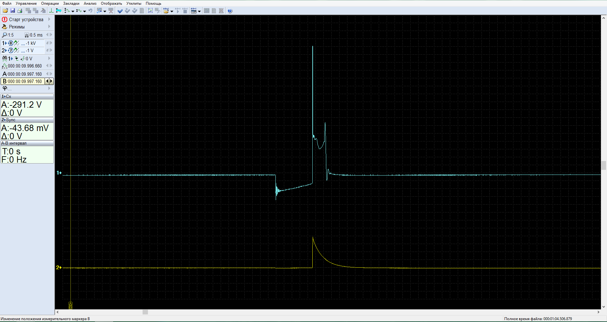
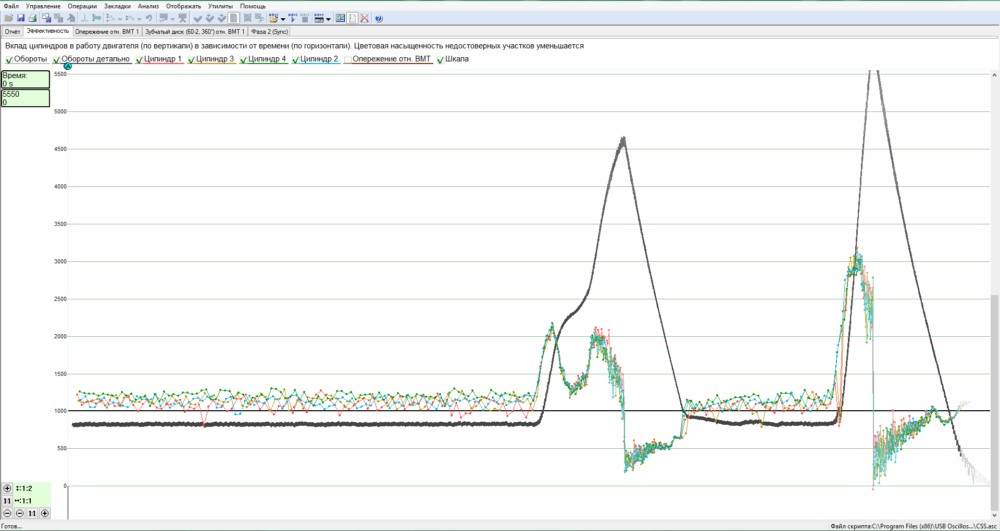
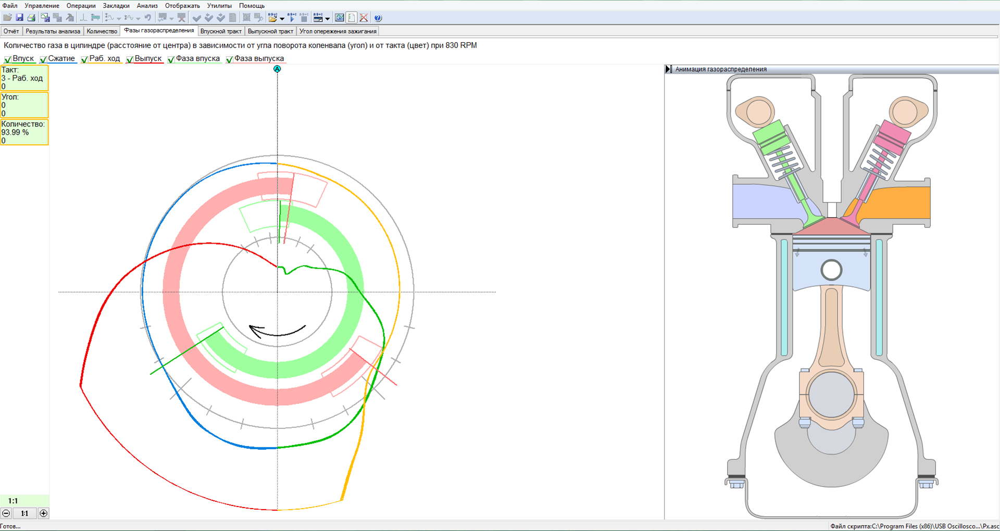
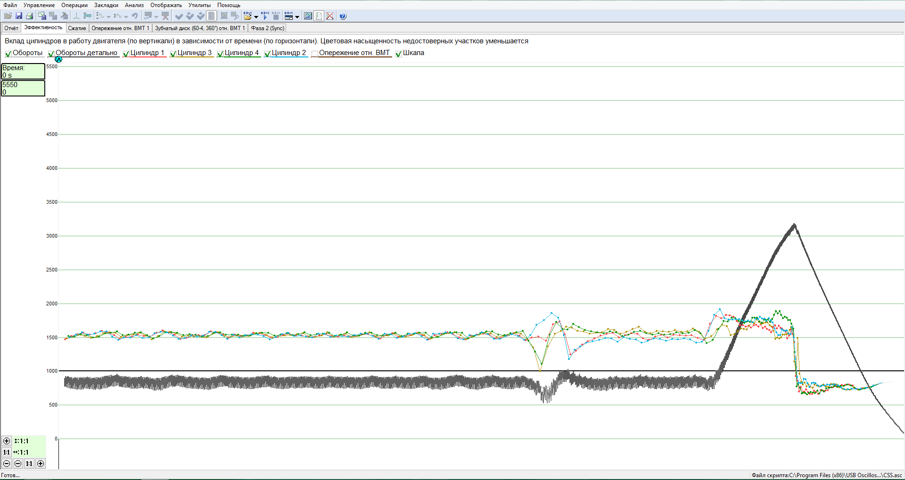
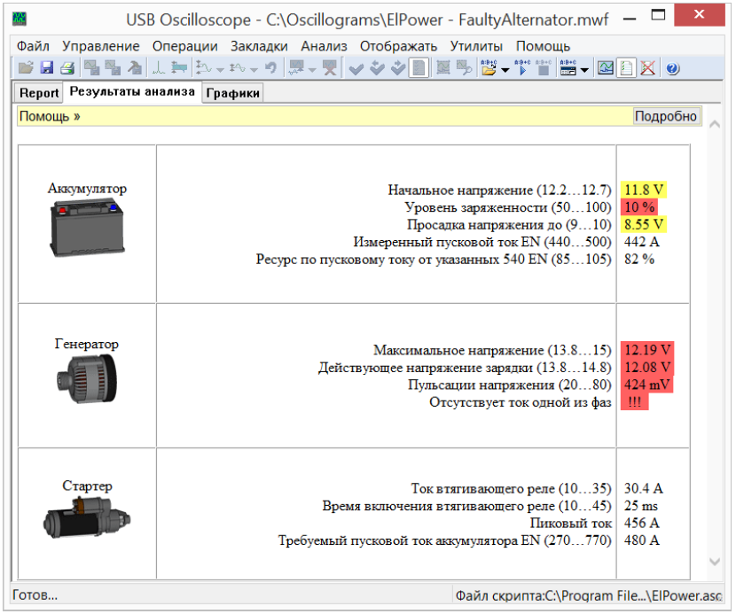

Cenas
Autoservisa pakalpojumu cenas varat lejupielādēt: PDF
Vai Lasīt tālāk:
Zemāk norādītas aptuvenas cenas par darbu, informatīvam nolūkam, lai gūtu priekšstatu par cenu veidošanos. Tā kā dažādu automašīnu konstrukcijas ir atšķirīgas un bojājumi, korozija var būt dažādi, precīzas cenas katrai automašīnai nav iespējams norādīt.
Lasīt tālāk:
Pakalpojumu apraksts
Benzīna dzinēju diagnostika un remonts
Diagnostika pēc izplūdes gāzu sastāva, izmantojot gāzu analizatoru Bosch BEA850.
Veicot četru gāzu sastāva analīzi (CO, CO2, CH, O2 un lamda), iespējams novērtēt dzinēja vadības sistēmas darbību, katalizatora resursu, izplūdes gāzu atbilstību tehniskās apskates prasībām.
Kompjūter diagnostika, izmantojot skaneri. Izmantojot skaneri iespējams nolasīt dzinēja elektroniskajā vadības blokā uzkrātās kļūdas, dzēst kļūdas, veikt devēju rādījumu nolasīšanu motora darbības laikā, veikt nepieciešamo izpildmehānismu adaptāciju, elektroniskā vadības bloka kodēšanu.
Dzinēja diagnostika izmantojot automobiļu oscilogrāfu (motortesteri).
Dzinēja devēju un izpildmehānismu individuāla testēšana.
Aizdedzes diagnostika pēc dzirksteles oscilogrammas.

Skripts CSS dzinēja darbības pārbaudei. Ļauj novērtēt un salīdzināt katra cilindra darbību visā noslodzes un apgriezienu diapazonā. Šo testu izmanto dzinēja nevienmērīgas darbības cēloņu atklāšanai. Tiek novērtēta degmaisījuma sagatavošana un aizdedzes darbība individuāli katrā cilindrā

Skripts Px dzinēja mehāniskā stāvokļa un nodiluma pārbaudei. Ļauj novērtēt dzinēja gāzu sadales mehānismu darbību, aizdedzes apsteidzes leņķi visā noslodzes un apgriezienu diapazonā, izplūdes sistēmas radīto pretestību. Šo testu izmanto, lai noteiktu dzinēja jaudas zuduma iespējamos mehānikos cēloņus

Degvielas sprauslu pārbaude uz stenda un tīrīšana ar ultraskaņu.
Pārbaudes stends CarbonZapp GS2. Multi port (MPI), tiešā iesmidzināšana (GDI, FSI, TSI), mono motronic, KE jetronic.
Dzinēju apkope, sagatavošana tehniskajai apskatei.
Gāzu sadales mehānisma piedziņas siksnas vai ķēdes nomaiņa.
Dīzeļa dzinēju diagnostika un remonts
Izplūdes gāzu izmešu koeficienta mērījumi, izmantojot gāzu analizatoru Bosch BEA850.
Kompjūter diagnostika, izmantojot skaneri. Izmantojot skaneri iespējams nolasīt dzinēja elektroniskajā vadības blokā uzkrātās kļūdas, dzēst kļūdas, veikt devēju rādījumu nolasīšanu motora darbības laikā, veikt nepieciešamo izpildmehānismu adaptāciju, elektroniskā vadības bloka kodēšanu.
Dzinēja diagnostika izmantojot automobiļu oscilogrāfu (motortesteri)
Dzinēja devēju un izpildmehānismu individuāla testēšana.
Skripts CSS dzinēja darbības pārbaudei. Ļauj novērtēt un salīdzināt katra cilindra darbību visā noslodzes un apgriezienu diapazonā. Šo testu izmanto dzinēja nevienmērīgas darbības cēloņu atklāšanai. Tiek novērtēta dinamiskā kompresija degmaisījuma sagatavošana individuāli katrā cilindrā.

Dzinēju apkope, sagatavošana tehniskajai apskatei.
Eļļas, filtru nomaiņa.
Gāzu sadales mehānisma piedziņas siksnas vai ķēdes nomaiņa.
Elektro sistēmas diagnostika un remonts
Spēka elektrikas sistēmas novērtēšana (akumulators, starteris, ģenerators).
Diagnostika tiek veikta izmantojot automobiļu oscilogrāfu (motortesteri), skripts ElPower.
Ātri un efektīvi, bez komponentu noņemšanas, tiek novērtēti akumulatora, startera un ģeneratora tehniskias stāvoklis.

Apgaismes, dažādu elektrisko sistēmu pārbaude un remonts, sagatavošana tehniskaijai apskatei.
Ritošās daļas diagnostika un remonts
Piekares mehānismu remonts. Sviru, sailentbloku, šarnīru, atsperu, amortizatoru nomaiņa.
Stūres mehānismu remonts. SAS sistēmu diagnostika un remonts, stūres pagrieziena devēja adaptācija.
Riteņu ģeometrijas regulēšana uz stenda.
Bremžu sistēmas diagnostika un remonts
Bremžu sistēmas remonts.
ABS, ESP sistēmu diagnostika un remonts.
Elektroniskās stāvbremzes EPB sistēmu diagnostika un remonts.